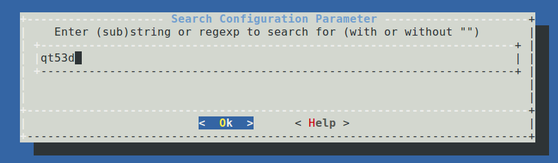
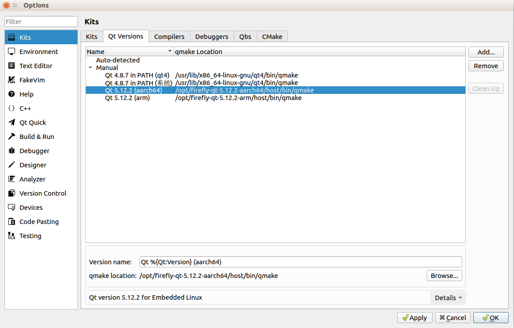
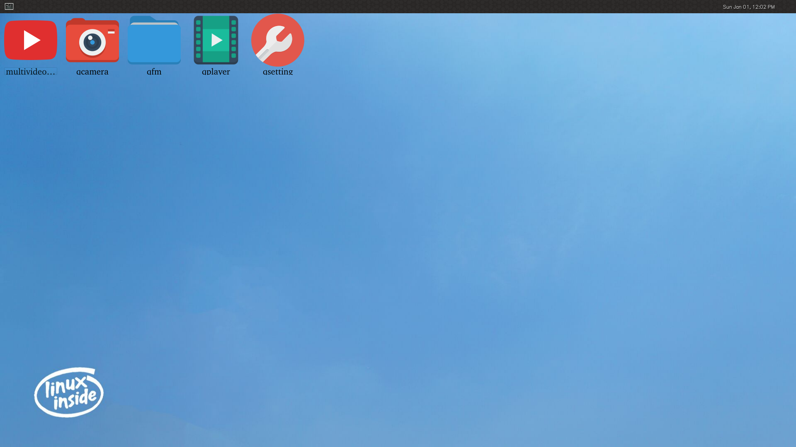

Buildroot Development Manual¶
Buildroot is a framework for building embedded Linux systems on the Linux platform. The entire Buildroot is composed of a Makefile (*.mk) script and a Kconfig (Config.in) configuration file. You can compile a complete Linux system software (including boot, kernel, rootfs, and various libraries and applications in rootfs) that can be directly flashed to the machine through the buildroot configuration and menuconfig modification, just like compiling the Linux kernel.
Directory structure¶
buildroot/
├── arch # Construction and configuration files of CPU architecture
├── board # Documents related to specific boards
├── boot # Construction and configuration files of Bootloaders
├── build
├── CHANGES # Buildroot modification log
├── Config.in
├── Config.in.legacy
├── configs # Buildroot configuration file of the specific board
├── COPYING
├── DEVELOPERS
├── dl # Downloaded programs, source code compressed packages, patches, etc.
├── docs # Documentation
├── fs # Construction and configuration files of various filesystems
├── linux # Construction and configuration files of Linux
├── Makefile
├── Makefile.legacy
├── output # Compile output directory
├── package # Construction and configuration files of all packages
├── README # Simple instructions for Buildroot
├── support # Scripts and configuration files that provide functional support for Bulidroot
├── system # Construction and configuration files of making root filesystem
├── toolchain # Construction and configuration files of cross-compilation toolchain
└── utils # Utilities
Configuration¶
Select the default profile:
# Enter the SDK root directory
cd path/to/SDK/
# Select configuration file
# `configs/rockchip_rk3399_defconfig`
source envsetup.sh rockchip_rk3399
After the execution is completed, a compilation output directory, output/rockchip_rk3399 will be generated, and subsequent operations of make can be executed in this directory.
Configure package¶
Open the configuration interface:
make menuconfig
We can add or cut some tools in the configuration interface to customize system functions as required. Take adding qt53d as an example:
Enter / to enter the search interface, enter the content you want to find qt53d, and press Enter to search:

Select 1 to jump to the corresponding page, press the space to select the configuration:
After the configuration is completed, move to Save and press Enter to save to .config; move to Exit and press Enter to exit.
Save the configuration file:
make savedefconfig
Save the changes to the configuration file configs/rockchip_rk3399_defconfig.
Configure Busybox¶
Open the configuration interface and configure:
make busybox-menuconfig

After the configuration is complete, move to Exit and press Enter to exit, select Yes in the pop-up window and save it to .config.
Save the configuration file:
make busybox-update-config
Save the changes to the configuration file board/rockchip/common/base/busybox.config.
Compile¶
After configuring Buildroot, run make directly to compile.
Compilation instructions¶
When you run make to compile, the following process will be executed:
Download the source code;
Configure, compile and install the cross-compilation toolchain;
Configure, compile and install the selected software package;
Generate the root filesystem according to the selected format;
More usages of make can be obtained through make help.
Compile the package¶
We can execute make <package> to compile a package separately. The compilation of the software package mainly includes the process of downloading, decompressing, patching, configuring, compiling, and installing. For details, please refer to package/pkg-generic.mk.
Download
Buildroot will automatically obtain the corresponding software packages from the Internet according to the configuration
package/<package>/<package>.mk, including some third-party libraries, plug-ins, utilities, etc., and place them in thedl/directory.Unzip
The package will be decompressed in the
output/rockchip_rk3399/build/<package>-<version>directory.Patch
Patches are placed in the
package/<packgae>/directory, and Buildroot will apply the corresponding patches after decompressing the package. If you want to modify the source code, you can modify it by patching.Configure
Compile
Install
After the compilation is completed, the required compilation files will be copied to the
output/rockchip_rk3399/target/directory.
For a certain package, we can call a certain step in the package construction through make <package>-<target>, as follows:
Package-specific:
<pkg> - Build and install <pkg> and all its dependencies
<pkg>-source - Only download the source files for <pkg>
<pkg>-extract - Extract <pkg> sources
<pkg>-patch - Apply patches to <pkg>
<pkg>-depends - Build <pkg>'s dependencies
<pkg>-configure - Build <pkg> up to the configure step
<pkg>-build - Build <pkg> up to the build step
<pkg>-graph-depends - Generate a graph of <pkg>'s dependencies
<pkg>-dirclean - Remove <pkg> build directory
<pkg>-reconfigure - Restart the build from the configure step
<pkg>-rebuild - Restart the build from the build step
Output directory¶
After the compilation is complete, a subdirectory will be generated in the compilation output directory output/rockchip_rk3399 as follows:
build/contains all source files, including the required host tools and selected packages for Buildroot. This directory contains all package source code.host/Tools required for host-side compilation include cross-compilation tools.images/contains a compressed root filesystem image file.staging/This directory is similar to the directory structure of the filesystem. It contains all the header files and libraries generated by the compiler, as well as other development files, but they are not tailored and are too large to be used for the target filesystem.target/contains the complete root filesystem. Compared tostaging/, it has no development files, no header files, and the binary files arestripprocessed.
Cross-compilation tool¶
After Buildroot is compiled, it will generate a cross-compilation tool in the output/rockchip_rk3399/host/ directory, which we can use to compile the target program.
Cross-compilation tool directory
output/rockchip_rk3399/host/bin/
Compile example hello.c
#include <stdio.h>
#include <stdlib.h>
int main(int argc, char *argv[])
{
printf("Hello World!\n");
return 0;
}
Compile
.../host/bin/arm-buildroot-linux-gnueabihf-gcc hello.c -o hello
Run
Copy the executable program hello to the device, run ./hello, you will see the printed message Hello World!.
Rebuild¶
For specific instructions on rebuilding, you can check the document buildroot/docs/manual/rebuilding-packages.txt.
Rebuild the package¶
During the development process, if the source code of a certain package is modified, Buildroot will not recompile the package. It can be operated as follows:
Method one
make <package>-rebuild
Method two
# Delete the compiled output directory of the package
rm -rf output/rockchip_rk3399/build/<package>-<version>
# Compile
make <package>
Full Rebuild¶
Buildroot does not attempt to detect what parts of the system should be rebuilt when the system configuration is changed through +make menuconfig+, +make xconfig+, or one of the other configuration tools. In some cases, Buildroot should rebuild the entire system, in some cases, only a specific subset of packages. But detecting this in a completely reliable manner is very difficult, and therefore the Buildroot developers have decided to simply not attempt to do this.
When a full rebuild is necessary¶
When the target architecture configuration is changed, a complete rebuild is needed;
When the toolchain configuration is changed, a complete rebuild generally is needed;
When an additional package is added to the configuration, a full rebuild is not necessarily needed;
When a package is removed from the configuration, buildroot does not do anything special. it does not remove the files installed by this package from the target root filesystem or from the toolchain sysroot. a full rebuild is needed to get rid of this package;
When the sub-options of a package are changed, the package is not automatically rebuilt;
When a change to the root filesystem skeleton is made, a full rebuild is needed;
Generally speaking, when you’re facing a build error and you’re unsure of the potential consequences of the configuration changes you’ve made, do a full rebuild. Specific instructions can be found in the document rebuilding-packages.txt.
Full rebuild¶
Method one
Directly delete the compilation output directory, and then re-configure and compile.
rm -rf output/
Method two
Executing the following command will delete the compilation output and recompile.
make clean all
Add local source package¶
During the development process, the built-in software package of Buildroot may not meet our needs sometimes, so we need to add a custom software package. Buildroot supports packages in a variety of formats, including generic-package, cmake-package, autotools-package, etc. We take generic-package as an example.
Create a project directory
cd path/to/SDK/
mkdir buildroot/package/rockchip/firefly_demo/
Create Config.in
Add Config.in under firefly_demo/:
config BR2_PACKAGE_FIREFLY_DEMO
bool "Simple Firefly Demo"
Create firefly_demo.mk
Add firefly_demo.mk under firefly_demo/:
##################################################
###########
#
### firefly_demo
#
##################################################
###########
ifeq ($(BR2_PACKAGE_FIREFLY_DEMO), y)
FIREFLY_DEMO_VERSION:=1.0.0
FIREFLY_DEMO_SITE=$(TOPDIR)/../external/firefly_demo/src
FIREFLY_DEMO_SITE_METHOD=local
define FIREFLY_DEMO_BUILD_CMDS
$(TARGET_MAKE_ENV) $(MAKE) CC=$(TARGET_CC) CXX=$(TARGET_CXX) -C $(@D)
endef
define FIREFLY_DEMO_CLEAN_CMDS
$(TARGET_MAKE_ENV) $(MAKE) -C $(@D) clean
endef
define FIREFLY_DEMO_INSTALL_TARGET_CMDS
$(TARGET_MAKE_ENV) $(MAKE) -C $(@D) install
endef
define FIREFLY_DEMO_UNINSTALL_TARGET_CMDS
$(TARGET_MAKE_ENV) $(MAKE) -C $(@D) uninstall
endef
$(eval $(generic-package))
endif
Create source code directory
The source code directory external/firefly_demo/src has been specified in the above Makefile.
cd path/to/SDK/
mkdir external/firefly_demo/src
Write source code firefly_demo.c
Add firefly_demo.c under firefly_demo/src/:
#include <stdio.h>
#include <stdlib.h>
int main(int argc, char *argv[])
{
printf("Hello World!\n");
return 0;
}
Write Makefile
Add Makefile under firefly_demo/src/:
DEPS =
OBJ = firefly_demo.o
CFLAGS =
%.o: %.c $(DEPS)
$(CC) -c -o $@ $< $(CFLAGS)
firefly_demo: $(OBJ)
$(CXX) -o $@ $^ $(CFLAGS)
.PHONY: clean
clean:
rm -f *.o *~ firefly_demo
.PHONY: install
install:
cp -f firefly_demo $(TARGET_DIR)/usr/bin/
.PHONY: uninstall
uninstall:
rm -f $(TARGET_DIR)/usr/bin/firefly_demo
Modify the upper Config.in
Add a line at the end of buildroot/package/rockchip/Config.in:
source "package/rockchip/firefly_demo/Config.in"
Select package
Open the configuration menu make menuconfig, find firefly_demo and select the configuration.
Compile
# Compile firefly_demo
make firefly_demo
# Package into the root filesystem
make
# If you modify the source code, recompile the package
make firefly_demo-rebuild
rootfs-overlay¶
rootfs-overly is a pretty good feature, it can overwrite the specified file to a directory after the target filesystem is compiled. In this way, we can easily add or modify some files to the root filesystem.
Suppose we want to add the file overlay-test under the /etc/ directory of the root filesystem, we can do as follows:
Set rootfs-overlay root directory
Open the configuration menu make menuconfig, and add the root directory for coverage by setting the BR2_ROOTFS_OVERLAY option. For rk3399, the directory board/rockchip/rk3399/fs-overlay/ has been added by default.
Add files to the coverage directory
cd buildroot/board/rockchip/rk3399/fs-overlay/
mkdir etc/
touch etc/overlay-test
Compile
make
Download the root filesystem
Download the compiled root filesystem output/rockchip_rk3399/images/rootfs.ext2 to the device. Start the device, you can see that the file /etc/overlay-test has been added.
You can also check the target/ directory to verify whether the addition is successful:
ls buildroot/output/rockchip_rk3399/target/etc/overlay-test
Cross compile Qt-5.12.2¶
Cross-compilation toolchain¶
Firefly has extracted Buildroot’s cross-compilation toolchain. Users can directly use this toolchain to develop Qt applications on Buildroot without downloading and compiling SDK code.
The toolchain supports plugins such as EGLFS, LinuxFB, and Wayland.
Use environment:
Host: x86-64 / Ubuntu 16.04/18.04
Devices: Firefly RK3399 RK3288 PX30 .. / Buildroot
Download¶
For 32-bit chips, such as rk3288, download firefly-qt-5.12.2-arm.tar.gz; for other 64-bit chips, such as rk3399, download firefly-qt-5.12.2-aarch64.tar.gz.
The following will take firefly-qt-5.12.2-aarch64.tar.gz as an example.
Directory¶
Unzip the downloaded compressed package:
tar -zxvf firefly-qt-5.12.2-aarch64.tar.gz
Directory Structure:
firefly-qt-5.12.2-aarch64/
├── aarch64.tar.gz # Library files, plugins, etc. for devices
├── demo
│ └── mainwindow # demo program
├── firefly-qt-5.12.2-aarch64 # Cross-compilation toolchain
└── ReadMe # Instructions for use
Configure cross-compilation environment¶
Copy the toolchain to the specified directory of the host:
cd firefly-qt-5.12.2-aarch64/
# The directory `/opt/` cannot be modified
cp -rdf firefly-qt-5.12.2-aarch64 /opt/
If the copy fails, modify the directory permissions first, and then perform the above operations:
sudo chmod 777 /opt/
Cross compilation¶
Take the demo program as an example, run the following command:
cd demo/mainwindow/
/opt/firefly-qt-5.12.2-aarch64/host/bin/qmake
make
After the compilation is complete, the executable program demo/mainwindow/mainwindow will be generated.
Configure the operating environment¶
Use a U disk to copy aarch64.tar to the device:
cp /media/usb0/aarch64.tar /userdata/
Unzip:
cd /userdata/
tar -xvf aarch64.tar
Copy the file to the corresponding directory:
cd aarch64/
cp -rdf usr/lib/* /usr/lib/
cp -rdf usr/qml/* /usr/qml/
cp usr/bin/gdbserver /usr/bin/
Run the program¶
Copy the compiled executable program mainwindow to the device.
The default board runs the Wayland desktop environment, which runs as follows:
# Set environment variables
export XDG_RUNTIME_DIR=/tmp/.xdg
# Run
./mainwindow -platform wayland
Run with eglfs plugin:
# Exit Wayland desktop environment
/etc/init.d/S50launcher stop
# Run
./mainwindow -platform eglfs
Qt Creator¶
The following describes the instructions for using Qt Creator. Before the operation, please configure the cross-compilation environment and running environment according to the previous steps.
Installation¶
Enter Qt official download page, download qt-opensource-linux-x64-5.12.2.run, after the download is complete, run installation.
Configuration¶
After the installation is complete, start Qt Creator, open the menu Tools -> Options, find Kits.
Config Qt Versions
qmake:
/opt/firefly-qt-5.12.2-aarch64/host/bin/qmake

Config Compilers
g++:
/opt/firefly-qt-5.12.2-aarch64/host/bin/aarch64-buildroot-linux-gnu-g++gcc:
/opt/firefly-qt-5.12.2-aarch64/host/bin/aarch64-buildroot-linux-gnu-gcc
To facilitate debugging, configure Debuggers and Devices for online debugging:
Config Debuggers
gdb:
/opt/firefly-qt-5.12.2-aarch64/host/bin/aarch64-buildroot-linux-gnu-gdb
Config Devices
Set the device’s IP, username(root) and password(rockchip). To facilitate debugging, you can set a static IP on the device.

Config Kits
Add the previously set configuration items to Kits.
Compile and run¶
Open the demo program, Welcome -> Open Project, select the Kits you want to use:
Then open Projects -> Run, configure the command line parameters, here is set to -platform wayland:
Configure environment variables, namely export XDG_RUNTIME_DIR=/tmp/.xdg:
Compile and run:
Click Build to cross-compile the Qt program; click Run or Debug to run or debug the program on the device. When you want to run the program again, remember to manually click Stop to close the running program.
The build directory is in demo/build-mainwindow-qt_5_12_2_aarch64-Debug
Desktop application¶
The officially released Buildroot firmware supports the Wayland desktop environment and some Qt applications by default, as shown below:

These Qt applications provide some basic functions, such as camera preview, file manager, multimedia player, WiFi connection, etc.
User and password¶
User: root
Password: rockchip
WiFi connection¶
# wifi_start.sh wifi-ssid password
wifi_start.sh wifi-test 12345678
Audio/Video playback¶
# Play wav
aplay test.wav
gstwavplay.sh test.wav
# Play mp3
mp3play.sh test.mp3
gstmp3play.sh test.mp3
# Play mp4
gstmp4play.sh test.mp4
gstvideoplay.sh test.mp4
SSH¶
Buildroot already supports SSH service by default.
ssh login device
Let the device be online, execute the login command on the PC:
# User: root; Password: rockchip
# IP: 192.168.27.129
~$ ssh root@192.168.27.129
The authenticity of host '192.168.27.129 (192.168.27.129)' can't be established.
ECDSA key fingerprint is SHA256:+NwFawDiU0EwLHRFrIA/7snmlMc9ZfN6Nxa5vUSC7Pg.
Are you sure you want to continue connecting (yes/no)? yes
Warning: Permanently added '192.168.27.129' (ECDSA) to the list of known hosts.
root@192.168.27.129's password:
[root@rk3399:~]#
scp
Execute the command on the PC to copy the file to the device:
~$ scp ./file root@192.168.27.129:/
root@192.168.27.129's password:
file 100% 154 0.2KB/s 00:00
MIPI Camera (OV13850)¶
Check whether the ISP driver is loaded successfully, you can see the following device information after success:
root@firefly:~# grep '' /sys/class/video4linux/video*/name
/sys/class/video4linux/video0/name:rkisp1_mainpath
/sys/class/video4linux/video1/name:rkisp1_selfpath
/sys/class/video4linux/video2/name:rkisp1_dmapath
/sys/class/video4linux/video3/name:rkisp1-statistics
/sys/class/video4linux/video4/name:rkisp1-input-params
root@firefly:~# ls /dev/video*
video0 video1 video2 video3 video4
Check whether the OV13850 device is successfully registered, you can see the following print if successful:
root@firefly:~# dmesg |grep 13850
[ 3.911130] ov13850 3-0010: driver version: 00.01.03
[ 3.911168] ov13850 3-0010: GPIO lookup for consumer reset
[ 3.911171] ov13850 3-0010: using device tree for GPIO lookup
[ 3.911187] of_get_named_gpiod_flags: parsed 'reset-gpios' property of node '/i2c@ff150000/ov13850@10[0]' - status (0)
[ 3.911370] ov13850 3-0010: could not get default pinstate
[ 3.911373] ov13850 3-0010: could not get sleep pinstate
[ 3.911376] ov13850 3-0010: GPIO lookup for consumer pwdn
[ 3.911379] ov13850 3-0010: using device tree for GPIO lookup
[ 3.911403] of_get_named_gpiod_flags: parsed 'pwdn-gpios' property of node '/i2c@ff150000/ov13850@10[0]' - status (0)
# Successfully obtain device ID
[ 3.914401] ov13850 3-0010: Detected OV00d850 sensor, REVISION 0xb2
Preview:
gst-launch-1.0 v4l2src device=/dev/video0 ! video/x-raw,format=NV12,width=640,height=480, framerate=30/1 ! videoconvert ! kmssink &
# Or
export XDG_RUNTIME_DIR=/tmp/.xdg
gst-launch-1.0 v4l2src device=/dev/video0 ! video/x-raw,format=NV12,width=640,height=480, framerate=30/1 ! videoconvert ! waylandsink &
External storage device¶
Buildroot supports automatic mounting of external storage devices:
U disk mount path: /udisk
TF card mounting path: /sdcard
Reset¶
Buildroot supports restoring factory settings. Run update directly or add the factory/reset parameter to enter recovery to restore factory settings.
Note: This factory setting means that it is restored to the initial state after the last firmware upgrade of the device.
update
# Or
update factory / update reset
Upgrade firmware¶
Buildroot supports upgrading firmware from external storage devices. The following is the upgrade process description.
Make upgrade firmware
Follow the normal firmware compilation process to make the firmware for upgrade. Build Buildroot Firmware
It is not necessary to upgrade the firmware in all partitions. You can modify the package-file file to remove the partitions that are not to be upgraded, which can reduce the size of the upgrade package.
For example, modify the file tools/linux/Linux_Pack_Firmware/rockdev/rk3399-package-file, change the relative path of rootfs to RESERVED, so that the root filesystem will not be packaged, that is, the root filesystem partition will not be upgraded.
# name relative path
#
#hwdef hwdef
package-file package-file
bootloader image/miniloaderall.bin
parameter image/parameter.txt
trust image/trust.img
uboot image/uboot.img
misc image/misc.img
boot image/boot.img
recovery image/recovery.img
rootfs RESERVED
oem image/oem.img
userdata:grow image/userdata.img
backup RESERVED
Copy the prepared upgrade firmware to the U disk, TF card, or the /userdata/ directory of the device, and rename it to update.img.
Note: If the upgrade firmware is placed in the /userdata/ directory of the device, do not package userdata.img, and change image/userdata.img to RESERVED.
Upgrade
Start the device, execute the upgrade command on the command line, update ota path/to/update.img, the device will enter recovery to upgrade.
# U Disk
update ota /udisk/update.img
# TF card
update ota /sdcard/update.img
# /userdata/
update ota /userdata/udpate.img
Wait for the upgrade to complete. After the upgrade is successful, the device will reboot into the system.
FirmwareOta¶
Firmwareota is a Qt desktop application that supports downloading firmware from the Internet for upgrades. The following are instructions for use.
Add desktop application¶
Download
Unzip
tar -zxvf firmwareota.tar.gz
According to the directory, copy the files to the device
└── usr
├── bin
│ └── firmwareota
└── share
├── applications
│ └── firmwareota.desktop
└── icon
└── icon_firmwareota.png
Restart desktop
/etc/init.d/S50launcher stop
/etc/init.d/S50launcher start
Start up
After the setting is complete, you can start the application on the desktop.
Set download address¶
The program will download the list file ota_list through the default Http address, and parse the list file to obtain the firmware download link.
List file format, for example:
firmware_name_1
http://192.168.2.11:8000/firmware_name_1
firmware_name_2
http://192.168.2.11:8000/firmware_name_2
...
We can add the file /userdata/list_url to set the download address of the specified list file, for example:
http://192.168.2.11:8000/ota_list
Weston¶
We can customize the display by configuring Weston, some of the settings are explained below.
Status Bar¶
Weston supports setting the background color and position of the status bar in the shell section of the weston.ini configuration file, as well as setting quick launch programs in the launcher section, such as:
# /etc/xdg/weston/weston.ini
[shell]
# The color format is ARGB8888
panel-color=0xff002244
# top|bottom|left|right|none
panel-position=bottom
[launcher]
icon=/usr/share/weston/terminal.png
path=/usr/bin/weston-terminal
[launcher]
# Icon path
icon=/usr/share/weston/icon_flower.png
# Quick start command
path=/usr/bin/qsetting
Background¶
Weston supports setting background patterns and colors in the shell section of the weston.ini configuration file, such as:
# /etc/xdg/weston/weston.ini
[shell]
# Background pattern (wallpaper) absolute path
background-image=/usr/share/weston/background.png
# scale|scale-crop|tile
background-type=scale
# The color format is ARGB8888, which will take effect when the background pattern is not set
background-color=0xff002244
Standby and lock screen¶
Weston’s timeout standby time can be configured in the startup parameters or in the core section of weston.ini, such as:
# /etc/init.d/S50launcher
start)
...
# 0 is to prohibit standby, the unit is second
weston --tty=2 -B=drm-backend.so --idle-time=0&
or:
# /etc/xdg/weston/weston.ini
[core]
# Set to enter the standby state after 5 seconds of inactivity
idle-time=5
Display color format¶
The current default display format of Weston in Buildroot SDK is ARGB8888. For some low-performance platforms, it can be configured as RGB565 in the core section of weston.ini, such as:
# /etc/xdg/weston/weston.ini
[core]
# xrgb8888|rgb565|xrgb2101010
gbm-format=rgb565
You can also configure the display format of each screen separately in the output section of weston.ini, such as:
# /etc/xdg/weston/weston.ini
[output]
# The name of output can be viewed /sys/class/drm/card0-name
name=LVDS-1
# xrgb8888|rgb565|xrgb2101010
gbm-format=rgb565
Screen orientation¶
Weston’s screen display direction can be configured in the output section of weston.ini, such as:
# /etc/xdg/weston/weston.ini
[output]
name=LVDS-1
# normal|90|180|270|flipped|flipped-90|flipped-180|flipped-270
transform=180
If you need to dynamically configure the screen orientation, you can use a dynamic configuration file, such as:
echo "output:all:rotate90"> /tmp/.weston_drm.conf # All screens are rotated 90 degrees
echo "output:eDP-1:rotate180"> /tmp/.weston_drm.conf # eDP-1 rotate 180 degrees
Resolution and scaling¶
The screen resolution and scaling of Weston can be configured in the output section of weston.ini, such as:
# /etc/xdg/weston/weston.ini
[output]
name=HDMI-A-1
# Need to be an effective resolution supported by the screen
mode=1920x1080
# Must be an integer multiple
scale=2
If you need to dynamically configure resolution and scaling, you can use dynamic configuration files, such as:
echo "output:HDMI-A-1:mode=800x600"> /tmp/.weston_drm.conf # Modify the resolution of HDMI-A-1 to 800x600
You need to rely on RGA acceleration when scaling in this way.
Freeze screen¶
When Weston was started, there was a black screen for a short period switching between the boot logo and the UI display. If you need to prevent a black screen, you can temporarily freeze the Weston screen content through the following dynamic configuration file methods:
# /etc/init.d/S50launcher
start)
...
export WESTON_FREEZE_DISPLAY=/tmp/.weston_freeze # Set the path of the special configuration file
touch /tmp/.weston_freeze # Freeze display
weston --tty=2 -B=drm-backend.so --idle-time=0&
...
sleep 1 && rm /tmp/.weston_freeze& # Thaw in 1 second
Multi-screen¶
The Weston of the Buildroot SDK supports functions such as multi-screen same-different display and hot-plugging. The distinction between different display screens is based on the drm name (obtained via /sys/class/drm/card0-name), and the relevant configuration is set through environment variables, such as:
# /etc/init.d/S50launcher
start)
...
export WESTON_DRM_PRIMARY=HDMI-A-1 # Specify the main display as HDMI-A-1
export WESTON_DRM_MIRROR=1 # Use mirror mode (multiple screens at the same display), if you don’t set this environment variable, it will be a different display
export WESTON_DRM_KEEP_RATIO=1 # The zoom maintains the aspect ratio in the mirror mode. If this variable is not set, the full screen is forced
export WESTON_DRM_PREFER_EXTERNAL=1 # The built-in display is automatically turned off when the external display is connected
export WESTON_DRM_PREFER_EXTERNAL_DUAL=1 # When the external display is connected, the first external display is the main display by default
weston --tty=2 -B=drm-backend.so --idle-time=0&
When zooming the display content in the mirror mode, you need to rely on RGA acceleration.
At the same time, it is also supported to individually disable specific screens in the output section of weston.ini:
# /etc/xdg/weston/weston.ini
[output]
name=LVDS-1
mode=off
# off|current|preferred|<WIDTHxHEIGHT@RATE>